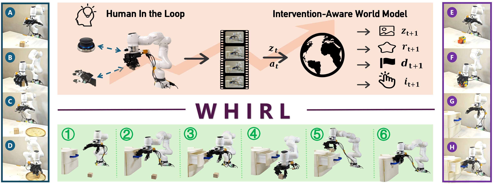
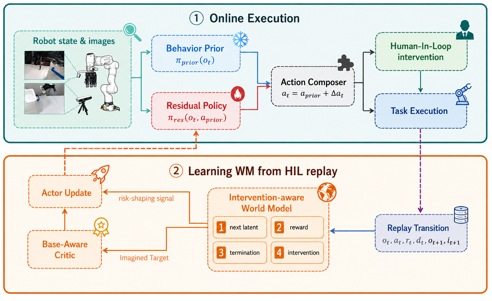
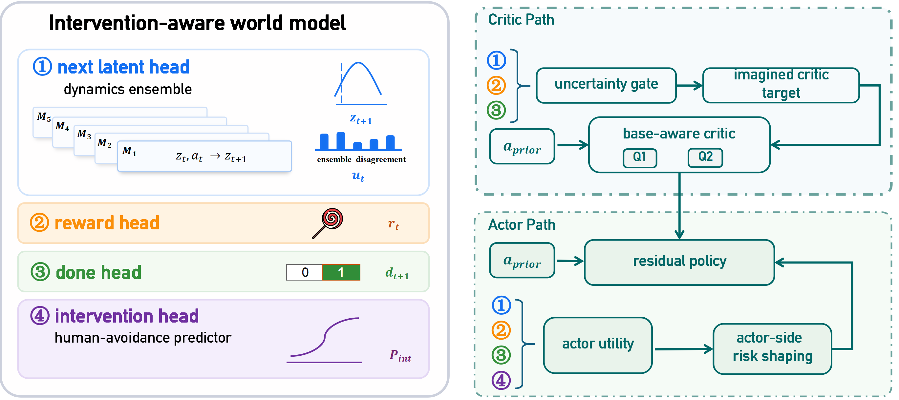
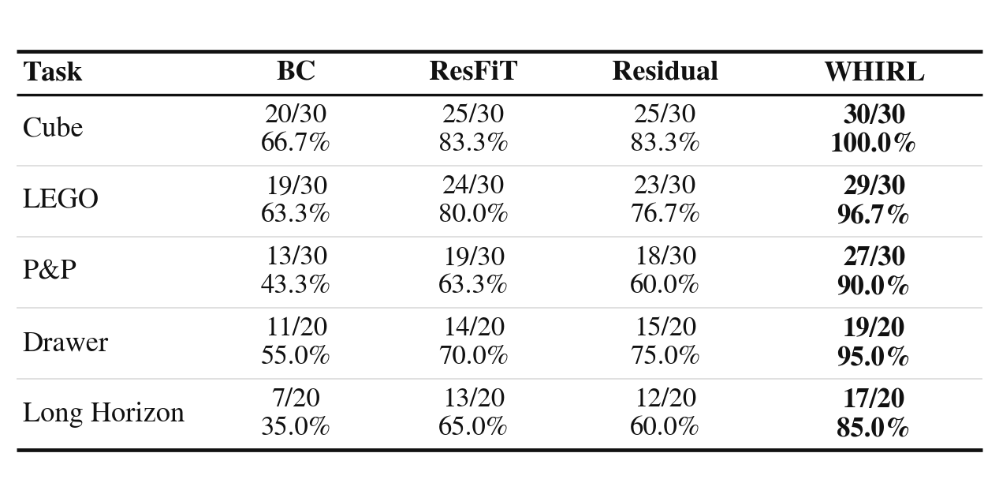
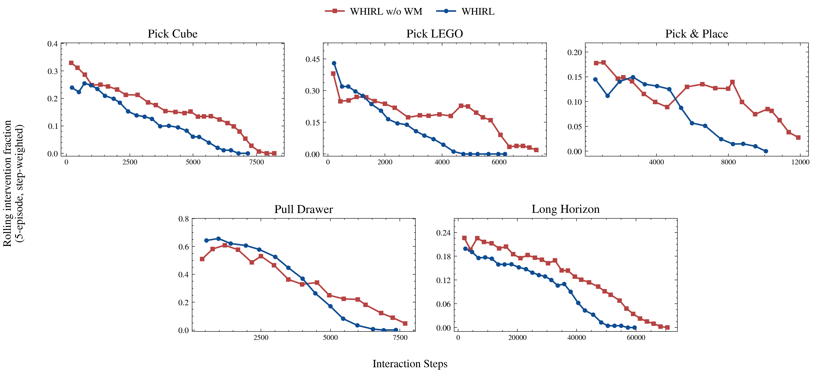
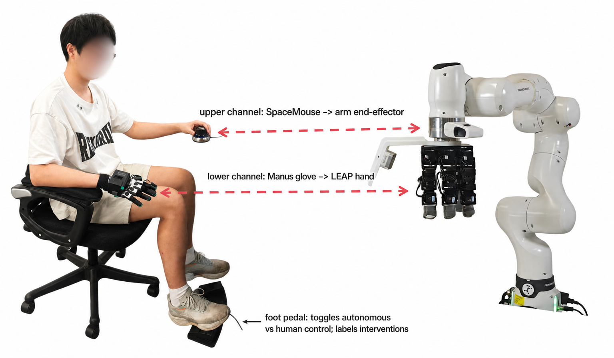

HIL labels
A foot pedal switches between autonomous execution and human teleoperation. The pedal state labels each transition with whether the operator took over.
CoRL 2026 submission
WHIRL turns human takeovers into predictive intervention signals for real-world residual RL with a 16-DoF dexterous hand.

Dynamics, reward, and termination support the critic; an intervention head shapes the actor.
Pick Cube, Pick LEGO, Pick & Place, Pull Drawer, and a long-horizon drawer-place-close task.
Franka FR3 arm, 16-DoF LEAP Hand, dual RGB cameras, Manus glove, SpaceMouse, and pedal takeover.
Multi-fingered dexterous manipulation remains difficult for online RL because exploratory failures are expensive on hardware. Human-in-the-loop RL can prevent catastrophic failures, but existing systems often treat takeovers as one-step corrections. WHIRL instead learns from what the human would avoid: each pedal intervention supervises an intervention-aware world model whose takeover-probability head predicts states likely to require help, then shapes the residual actor away from those regions.
Method

A foot pedal switches between autonomous execution and human teleoperation. The pedal state labels each transition with whether the operator took over.
Dynamics, reward, and termination heads produce a short-horizon model-based target, gated by ensemble uncertainty before it enters the critic loss.
The intervention head predicts future takeover probability and shapes the actor toward states that are less likely to require human control.

Results


Real-world rollouts
Hardware

@article{whirl2026,
title = {How to Learn from What a Human Would Avoid? Intervention-Aware World Models with Real-World RL for Dexterous Manipulation},
author = {Anonymous Authors},
journal = {arXiv preprint},
year = {2026}
}